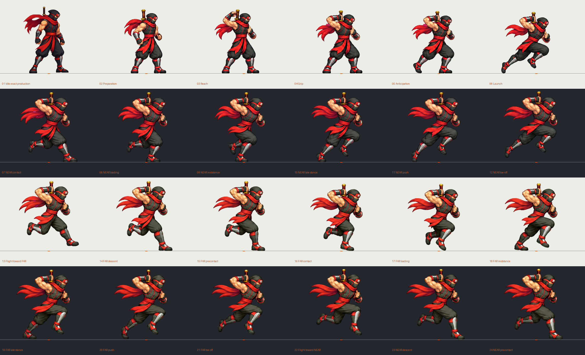

Ninja Hỏa · Run V11 · Bản nháp chưa duyệt
24 frame để review. Có sai lệch texture/tỷ lệ cơ thể và các pha chân cần sửa; xem QC trước khi đánh giá. Chưa thay production hoặc tích hợp game.
RUN_START chạy một lần; RUN_LOOP lặp. Chế độ ghép chạy sáu frame đầu rồi lặp frame 07–24. Review từng frame trên hai nền và kiểm tra nối 06→07, 12→13, 18→19, 24→07. Nền đứng yên chỉ cho thấy animation tại chỗ; chưa chứng nhận chân không trượt khi nhân vật di chuyển.
Contact sheet 24 frame · GIF vào chạy · GIF vòng chạy · GIF ghép · Báo cáo QC · Timing / đăng ký frame
